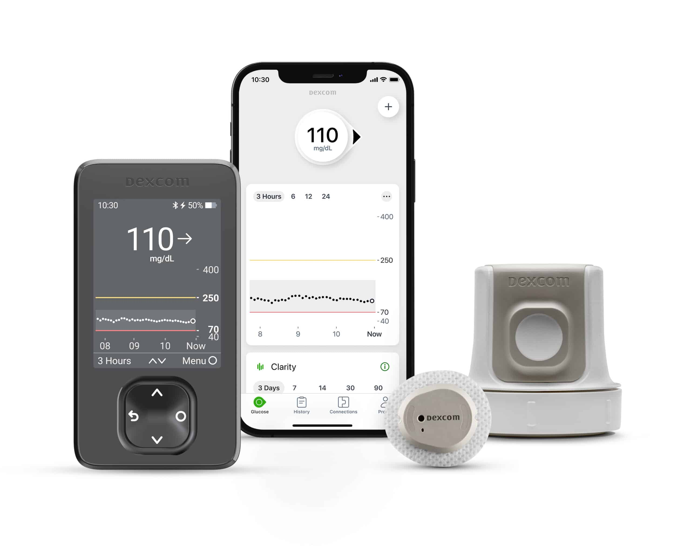
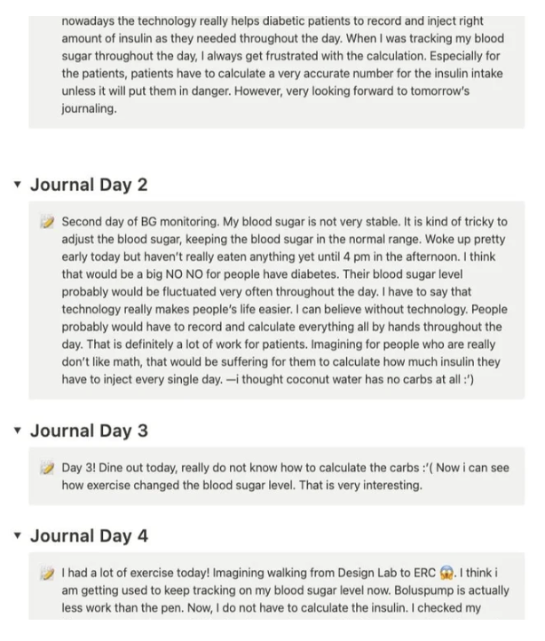
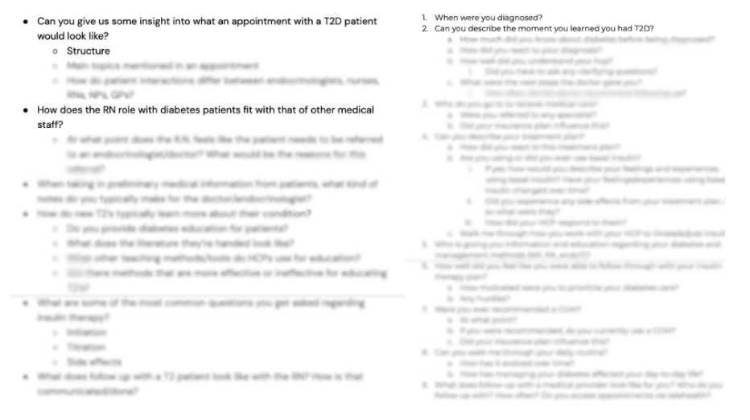
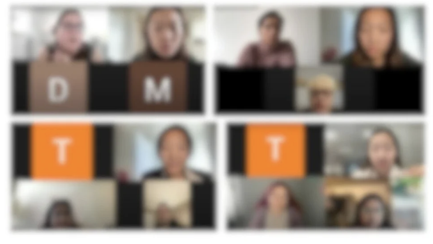
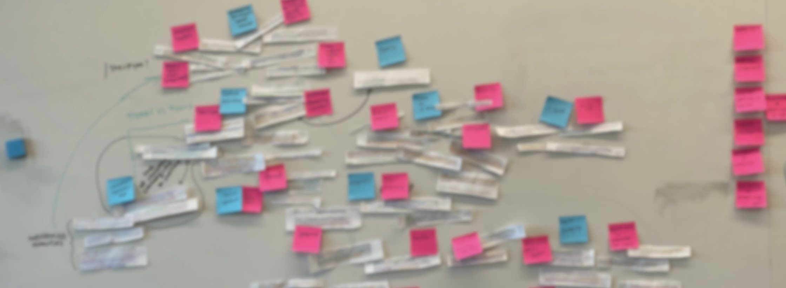
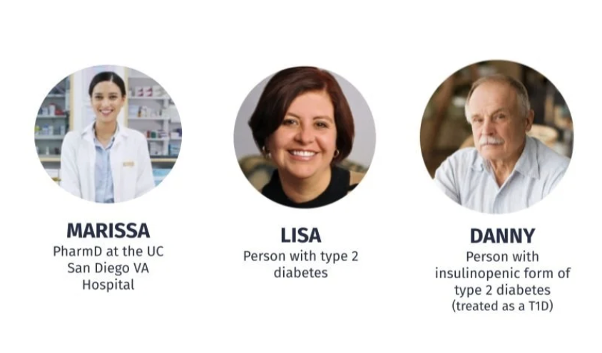
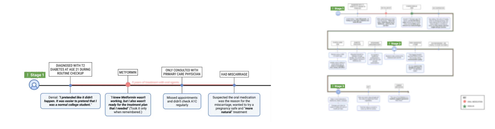

Dexcom · UX Research 2024
From Research to Insight: Designing with Empathy for People Living with Type 2 Diabetes
Role
UX Researcher
Timeline
2024
Methods
Diary Study
Secondary Research
In-Depth Interviews
Skills
Thematic Analysis
Affinity Diagramming
Journey Mapping
Dexcom? CGM?
Dexcom develops and produces continuous glucose monitoring (CGM) systems for diabetes management. The main advantage of Dexcom's CGM is that it eliminates the need for fingersticks and provides 24/7 real-time blood sugar monitoring through their mobile app.
Our central research question: How do people living with Type 2 diabetes experience and navigate the initiation and titration of basal insulin?

Living with Diabetes: A Week of Immersion
Before studying our participants, I studied myself. To understand life with diabetes from the inside out, I participated in a 5-day activity designed to simulate what it's like to live with Type 1 Diabetes — using a bot to monitor a simulated glucose level throughout each day.
This wasn't research from behind a desk. It was an attempt at genuine empathy — to feel the cognitive load, the interruptions, the anxiety of managing a condition that never lets you fully switch off.
"Five days in, I understood something I couldn't have read in any paper: managing blood sugar isn't just a medical task — it's a constant negotiation between your body, your life, and your attention."

After living it, we started reading about it.
After gaining a personal understanding of what it's like to live with diabetes, we began reviewing academic papers to deepen our knowledge of the basal insulin initiation and titration process — the clinical and behavioral dimensions we couldn't experience firsthand.
We used Affinity Diagramming to categorize and organize our findings — clustering themes across clinical protocols, patient barriers, and provider perspectives.


We knew the clinical picture. Now we needed the human one.
Secondary research gave us an overall understanding of the insulin initiation and titration process and some of the main struggles patients face. To go deeper, we developed an interview protocol for the upcoming sessions — customizing it based on each participant's background, whether they were a patient, caregiver, or clinician.
12+ conversations. Patients, doctors, professors, pharmacists.
We conducted 12+ in-depth interviews to gather qualitative insights from individuals living with diabetes and healthcare professionals — including endocrinologists, UC San Diego Medical School professors, PharmDs, and nurses.
This step helped us understand personal experiences, challenges, and perspectives related to basal insulin initiation and titration — from both sides of the clinical relationship.
🩺
Patients
People living with Type 2 diabetes navigating insulin initiation for the first time or managing ongoing titration.
👩⚕️
Clinicians
Endocrinologists and UCSD Medical School professors who prescribe and oversee insulin regimens.
💊
PharmDs & Nurses
Healthcare professionals who educate patients on insulin use and support titration decisions day-to-day.


From 12+ conversations to patterns we could act on.
After gathering data from the interviews, we utilized thematic analysis to organize the large dataset and identify key themes — moving from raw interview notes to structured, actionable insights.

Three personas. Because no two patients experience insulin the same way.
As treatment varies greatly from person to person, we organized our analysis around three distinct user personas — each representing a different relationship to insulin initiation and a different set of barriers, fears, and motivations.

Research Question
How do people living with Type 2 diabetes experience and navigate the initiation and titration of basal insulin?
Three stages. One difficult journey.
From our interviews, we identified three key stages in the patient's journey with basal insulin. We crafted our research insights into a clear narrative by aligning them with these stages — showing where patients struggle, where they need support, and where the system is failing them.

What I learned
👉 Be Flexible
Originally, we wanted to conduct an onsite clinical observation at a local hospital — but our application was denied. Instead of stopping there, we reached out to other professionals in the community and eventually connected with a PharmD at the hospital. She was willing to show us part of what an insulin initiation education visit for first-timers looks like via Zoom. The constraint became a different kind of access.
Empathy has to be practiced, not just assumed
The diary study fundamentally changed how I listened in interviews. Having spent five days in a simulated version of a diabetic routine, I stopped asking surface-level questions and started asking about the details that actually mattered — the midnight alerts, the mental math, the fear. Immersion made me a better researcher.
The clinical and the personal are inseparable
Secondary research gave us the medical framework. Interviews gave us the human cost. Neither was sufficient on its own. The most meaningful insights came at the intersection — when a patient's lived experience directly contradicted what the clinical literature described as "standard protocol." That gap is where the real design opportunity lives.